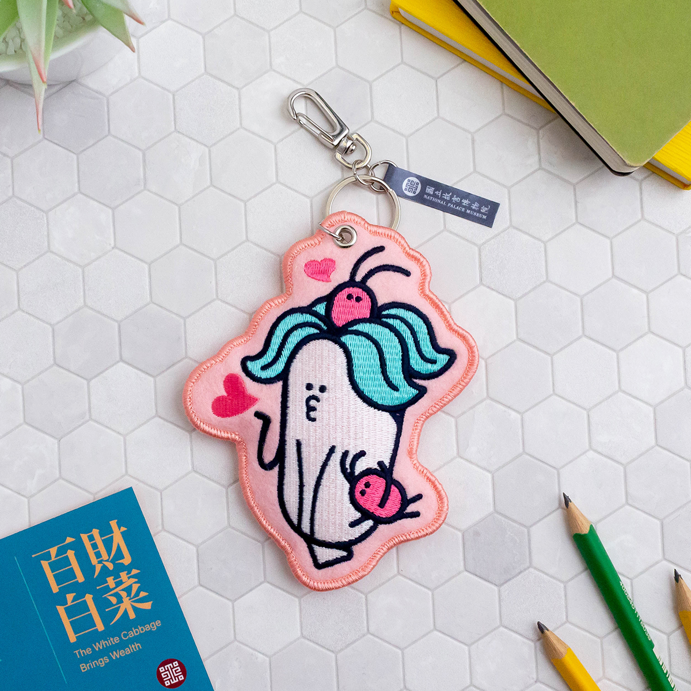

產品描述：
材質：100% 柔和不刺眼的光源與全心全意的支持。
功能：專注照亮妳穿針引線的每一個瞬間，確保每一朵繡花都完美無瑕。
續航力：擁有超越常理的耐心，就算妳一坐就是好幾個小時，它也會靜靜陪在旁邊不喊累。
保養說明：燈泡若有閃爍，請記得適時放下手邊的針線活，讓眼睛休息一下，或呼喚老公遞上熱茶。
特點：讓妳在夜晚盡情享受 Me Time 的絕佳利器，是每個刺繡大師的夢幻配備。
警告：請勿長時間直視光源，以免被老公隱藏在光線裡的愛意閃瞎。
🕵️ 下一步指示：
有了完美的燈光，接下來有一位來自冰天雪地的神祕嘉賓在等妳。她雖然來自極地，但內建了全宇宙最溫暖的擁抱。快前往緊鄰著餐廳的 「兒童天地絨毛玩具區」，尋找那個熟悉的小身影吧！